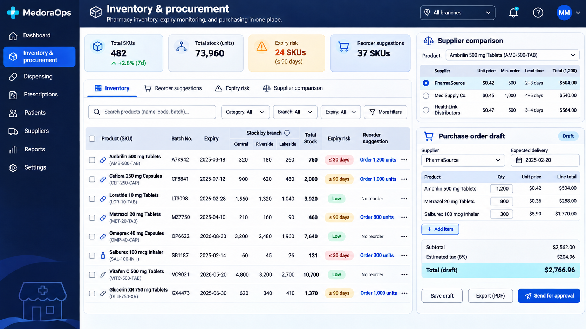
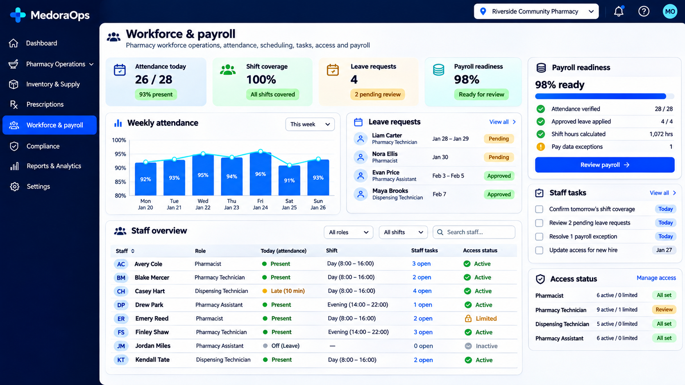

Concept overview
A fictional operations concept for pharmacy and medical retail teams, connecting sales, stock, purchasing, batch expiry, suppliers and workforce administration. This self-directed concept demonstrates how we would approach the product, workflows and technical structure; it is not presented as commissioned client work.
The business challenge
Independent pharmacy and medical retail teams often manage sales, batches, expiry dates, suppliers, purchasing and employee records in separate tools. This makes stock planning harder, increases manual reconciliation and limits visibility across branches.
The proposed solution
MedoraOps is a self-directed concept for a connected pharmacy operations workspace. It brings daily sales, batch-level inventory, expiry risk, supplier comparisons, purchase orders, deliveries, workforce planning and payroll readiness into a shared interface. The concept emphasizes fast exception handling and traceable operational decisions.
Capabilities demonstrated
Admin panel features
- Daily sales and cash-flow overview
- Multi-branch inventory visibility
- Batch and expiry monitoring
- Low-stock and reorder suggestions
- Supplier comparison
- Purchase order workflow
- Delivery tracking
- Returns and transaction history
- Attendance and shift coverage
- Leave and payroll readiness
- Staff task management
- Role-based access controls
Proposed technology stack
Explore our technology stack and development approach.
What this concept demonstrates
This concept demonstrates workflow discovery, information architecture, dashboard design and a proposed Laravel system structure for a regulated retail environment. All screens, names and data are original portfolio materials created for demonstration; they do not represent a commissioned client project.
A closer look



Potential business value
A platform based on this model could help teams spot low stock and expiring batches earlier, compare purchasing options, coordinate staff coverage and reduce repeated administrative work. Shared operational data could also make branch-level reporting and daily decisions more consistent.